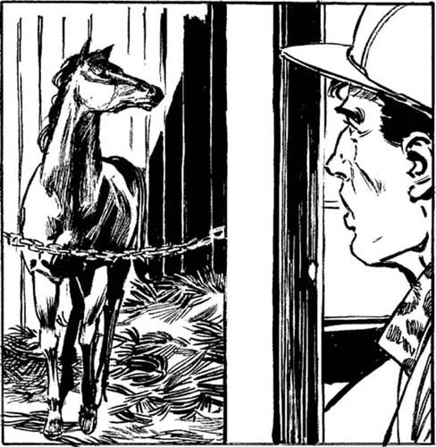

10
Listen to Part 1:

Người chỉ huy
Ngọn đèn toát sáng từ căn phòng đằng sau cánh cửa bí ẩn. Trong căn phòng đó có một chỗ ở chuồng. Và ở trong chỗ ở chuồng đó có một con ngựa nâu cao lớn.

Tôi đã nghe thấy một tiếng động lạ trong chuyến viếng thăm chuồng ngựa số 14 đầu tiên của mình. Giờ tôi mới hiểu. Tiếng động đó phát ra từ căn phòng này.
Tôi tiến về phía con ngựa.
‘Đứng yên đó!’ một giọng đàn ông vang lên. Thứ gì đó cứng và sắc nhọn được ấn vào lưng tôi. Tôi nhận ra giọng nói đó. Tôi bắt đầu xoay người về phía người đàn ông.
‘Đứng yên đó!’ gã đàn ông lại nói. ‘Ném khẩu súng ra đằng sau. Rồi nằm xuống sàn.’
Tôi làm theo đúng như lời gã đàn ông đó nói. Tôi nằm xuống sàn và chờ đợi một vài giây. Rồi tôi lăn rất nhanh sang bên. Lou Weaver đang đứng cạnh tôi. Gã ta cầm trên tay một cái chĩa lớn. Đó là loại chĩa dùng để xới rơm. Tôi nhanh chóng giật lấy cái chĩa từ tay Lou rồi đá vào chân gã. Tôi đá rất mạnh. Lou hét lên một tiếng lớn và ngã xuống sàn cạnh tôi.
Tôi nhặt khẩu súng và tiến về phía Lou. Tôi ngồi lên ngực gã. Gã lão già đó không thể cử động. Và tôi có khẩu súng.
‘Được rồi, Lou,’ tôi nói. ‘Anh có nhớ tôi không?’
Listen to Part 2:
‘Phải, tôi nhớ bạn,’ Lou đáp lại. ‘Bạn đã đến trang trại hôm qua.’ Sau đó gã ta nhìn vào thẻ an ninh của tôi. ‘Anh là nhân viên chính thức ở đây à?’ gã hỏi. Gã ta sợ mất hồn mất vía.
‘Không,’ tôi đáp. ‘Tên tôi là Lenny Samuel. Tôi là một thám tử tư. Tôi đang làm việc cho Sandy Bonner. Tôi đang tìm Người chỉ huy.’
Tôi đưa giấy phép thám tử cho Lou xem. Gã ta rất ngạc nhiên.
‘Được thôi,’ gã nói. ‘Bạn đã tìm thấy Người chỉ huy. Nhưng Sandy biết gã ta ở đâu rồi.’
‘Anh muốn nói gì?’ tôi hỏi.
‘Hãy để tôi đứng dậy và tôi sẽ kể cho bạn mọi chuyện,’ Lou nói.
Chúng tôi đứng dậy. Lou tiến về phía chỗ ở chuồng và chỉ tay về phía con ngựa nâu cao lớn.
‘Đây là Người chỉ huy,’ gã nói. ‘Tôi sẽ chăm sóc gã ta ở đây cho đến ngày mai.’
‘Tại sao Người chỉ huy lại ở đây trong trường đua?’ tôi hỏi. ‘Và tại sao gã ta lại ở trong căn phòng bí mật này?’
Lou chạm vào mũi con ngựa. Người chỉ huy khẽ kêu lên một tiếng.
Listen to Part 3:
‘Golden Dragon đã không tham gia cuộc đua mới đây,’ Lou nói. ‘Người chỉ huy đã tham gia cuộc đua. Ban tổ chức không hay biết chuyện này. Người chỉ huy và Golden Dragon có chiều cao và màu sắc giống nhau. Nhưng Người chỉ huy chạy nhanh hơn Golden Dragon rất nhiều. Gã ta là một chiến thắng!’
‘Nhưng các quan chức của trường đua sẽ kiểm tra hộ chiếu và hình xăm của ngựa vào ngày diễn ra cuộc đua,’ tôi nói. ‘ID của Người chỉ huy và ID của Golden Dragon là khác nhau.’
‘Phải. Các quan chức kiểm tra ID của ngựa vào các ngày diễn ra cuộc đua,’ Lou nói. ‘Họ kiểm tra ID khi những con ngựa đến nơi tổ chức và họ kiểm tra lại khi ngựa rời khỏi đó. Nhưng không một ai kiểm tra vào những ngày luyện tập. Người chỉ huy đã đến đây trong xe kéo hôm qua vào buổi chiều. Gã ta được đưa vào căn phòng bí mật này. Chiếc xe kéo trống không khi rời khỏi trường đua. Không một ai kiểm tra chiếc xe kéo đó. Người chỉ huy đã ở lại đây đêm qua.
‘Sáng nay,’ Lou kể tiếp, ‘Golden Dragon đã đến đây trong xe kéo. Các quan chức đã kiểm tra hộ chiếu và hình xăm của ngựa. Nhưng Golden Dragon đã không tham gia cuộc đua. Chiều nay, Golden Dragon được đưa vào căn phòng bí mật này. Người chỉ huy được đưa đến đường đua. Người chỉ huy đã thay thế Golden Dragon tham gia cuộc đua. Người chỉ huy đã thắng cuộc đua. Sau đó gã ta lại bị đưa về căn phòng này. Còn Golden Dragon thì bị đưa đi trong xe kéo. ID của ngựa được kiểm tra ở cổng.
‘Người chỉ huy sẽ ở lại căn phòng này thêm đêm nữa,’ Lou kể tiếp. ‘Ngày mai sẽ không có cuộc đua nào diễn ra. Chủ Nhật là ngày luyện tập. Khi xe kéo đến vào ngày mai, nó sẽ trống không. Không một ai sẽ kiểm tra chiếc xe kéo đó. Sau đó, Người chỉ huy sẽ quay trở về trang trại.’
‘Vậy là anh đang hợp tác với những tên tội phạm này à,’ tôi nói. ‘Và Sandy biết về chuyện này. Anh cũng là tội phạm! Anh và Sandy đã thắng được bao nhiêu tiền, Lou?’
‘Cô Bonner và tôi không thắng được bất kỳ đồng nào cả!’ Lou tức giận nói. ‘Gates và gã bạn của hắn là Ventanas mới chính là những tên tội phạm. Chúng là chủ sở hữu của Golden Dragon. Chúng đến trang trại của chúng tôi vào sáng thứ Năm và Gates đã trộm Người chỉ huy đi. Lúc đó chúng tôi chưa biết về kế hoạch của chúng. Trưa hôm nay, chúng lại đến trang trại của chúng tôi. Chúng nói với chúng tôi về kế hoạch của chúng. Chúng nhốt Sandy trong một nhà kho và khóa cửa lại. Chúng có súng. Chúng bắt tôi phải đi đến đây cùng chúng. Ventanas nói: “Nếu anh không giúp chúng tôi chăm sóc Người chỉ huy thì chúng tôi sẽ giết Sandy Bonner.” Tôi bắt buộc phải giúp chúng.’
Đột nhiên, có một tiếng động phát ra từ phía trước chuồng ngựa. Lou giật khẩu súng khỏi tay tôi.
‘Im lặng!’ gã ta nói. ‘Cứ ở lại đây với con ngựa và đừng phát ra tiếng ồn. Gates và Ventanas đã quay trở lại. Nếu chúng phát hiện ra anh ở đây, chúng sẽ giết anh đấy.’
Tôi nằm xuống đống rơm bên cạnh Người chỉ huy. Gã ta rất to. ‘Làm ơn đừng dẫm lên người tôi,’ tôi thì thầm với Người chỉ huy.
Listen to Part 4:
‘Weaver!’ một giọng đàn ông hét lên. ‘Anh ở đâu vậy? Tại sao cửa lại mở thế này?’
Lou tiến về phía trước chuồng ngựa. Tôi không thể nhìn thấy gì. Nhưng tôi có thể nghe thấy cuộc đối thoại.
‘Tôi rất xin lỗi, anh Gates ạ,’ Lou nói. ‘Tôi thấy nóng quá. Và Người chỉ huy cũng thấy nóng sau cuộc đua nên...’
‘Quên con ngựa đó đi!’ Gates hét lên. ‘Con ngựa đó sẽ chết vào ngày mai.’
‘Chết ư? Tại sao vậy?’ Lou Weaver tức giận hỏi. ‘Chúng tôi đã làm mọi thứ mà anh muốn. Người chỉ huy đã tham gia cuộc đua thay thế cho Golden Dragon. Người chỉ huy đã giành chiến thắng trong cuộc đua cho anh rồi. Bây giờ anh phải thả Sandy ra. Anh phải bỏ đi và không bao giờ quay trở lại nữa!’
Người đàn ông kia - Ventanas - cười lớn. Đó là một tiếng cười độc địa.
‘Chúng tôi đã kiếm được 5 triệu đô la khi Golden Dragon thắng cuộc đua,’ gã ta nói. ‘Chúng tôi đã cược khắp cả nước. Chúng tôi đặt cược qua điện thoại. Chúng tôi không muốn bất kỳ ai phát hiện ra chuyện này. Vì thế Người chỉ huy phải chết. Và chúng tôi cũng sẽ giết cô gái đó và giết anh luôn, Weaver ạ.’
‘Giết Sandy ư?’ Lou tức giận nói. ‘Không!’
Có một tiếng nổ lớn và một tiếng kêu đau đớn.
Có thêm hai tiếng nổ lớn nữa và rồi có một tiếng động khác. Có thứ gì đó rơi xuống sàn.
Listen to Part 5:
‘Tôi đã bắn gã ta rồi, Dick ạ,’ Ventanas nói. ‘Anh có ổn không?’
‘Không ổn!’ Gates đáp. ‘Gã già ngu ngốc đó đã bắn vào tay tôi rồi.’
Tôi rất thận trọng nhìn ra chỗ ở chuồng của Người chỉ huy. Lou Weaver đang nằm dưới đất. Khẩu súng của tôi ở ngay bên cạnh gã ta. Ventanas đang cầm trên tay một khẩu súng. Dick Gates đang dùng tay trái giữ cánh tay phải của mình. Có máu dính trên tay gã ta.
‘Tôi sẽ làm gì với con ngựa đây?’ Ventanas hỏi. ‘Tôi có nên giết nó không?’ Gã ta nhặt khẩu súng của tôi. Sau đó gã ta bắt đầu tiến về phía Người chỉ huy và tôi.
‘Không,’ Gates nói. ‘Chúng ta sẽ để nó ở đây và khóa cửa lại. Con ngựa sẽ chết.’
‘Được thôi, Dick,’ Ventanas nói. ‘Bây giờ chúng ta sẽ đi đâu?’
‘Chúng ta sẽ đến trang trại Ride-A-Winner,’ Gates nói. ‘Chúng ta sẽ giết Sandy Bonner. Khi đó sẽ không có ai biết về kế hoạch của chúng ta nữa.’
Tôi nghe thấy tiếng đóng cửa chuồng ngựa. Tôi nghe thấy tiếng mở khóa cửa. Gates và gã bạn của hắn sắp giết Sandy. Tôi phải hành động nhanh chóng.
Lou Weaver đang nằm dưới đất.